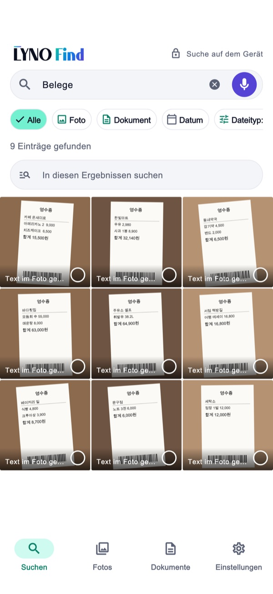
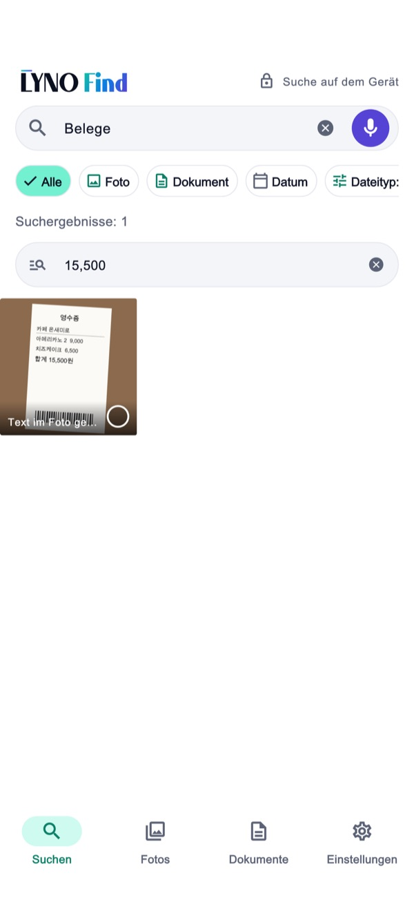

Genauer suchen
1. Nur gesuchte Wörter eingeben
Am genauesten wird es mit genau den Wörtern, die du suchst. LYNO Find sucht gleichzeitig in dem, was Fotos zeigen, im Text auf Fotos und im Text von Dokumenten. Videos werden noch nicht durchsucht.

Beispiele: Katze Quittung WLAN Passwort
2. Nach Ordnernamen suchen
Gib den Namen eines eingeschalteten smarten Ordners ein, dann erscheinen dessen Fotos unter den Ergebnissen. Mit zwei oder drei Namen, getrennt durch Leerzeichen, siehst du nur Fotos, die in allen sind.
Beispiele: Hund Strand Sonnenuntergang
3. Mehrere Wörter mit Punkten trennen · Mehrfachsuche
Mit Punkt (.) oder Komma (,) getrennte Wörter ergeben eine Mehrfachsuche. Fotos mit allen Wörtern kommen zuerst, danach Fotos mit einigen davon. Öffnest du ein Foto groß, siehst du für jedes Wort, wie oft es gefunden wurde.
Nur mit Leerzeichen wird als Satz gesucht, praktisch für Formulierungen in Dokumenten.
Über den Ergebnissen siehst du, wie viele Fotos alle Wörter haben und wie viele jedes einzelne. Findet eine Suche mit Leerzeichen wenig, erscheint die Schaltfläche „Einzeln suchen“.
Zuerst Leerzeichen, für mehrere Dinge Punkte. Wörter mit Leerzeichen (Japan Strand) lassen nur Fotos übrig, die alles erfüllen: eng und genau. Mit Punkten getrennte Wörter (Hund. Katze. Meer) werden einzeln gesucht und zusammen gezeigt, Fotos mit allen Wörtern zuerst. Findet die Suche mit Leerzeichen wenig, tippe auf "Einzeln suchen".
Beispiele: Hund. Katze. Meer
4. Einfach sagen · Sprachsuche
Tippe auf das Mikrofon und sprich. LYNO Find nimmt nur die wichtigen Wörter und zeigt Fotos, auf denen sie zusammen vorkommen, zuerst.
iPhone · SiriOhne die App zu öffnen, sag zu Siri „Finde es in LYNO Find“ und nenne dann, was gesucht werden soll, etwa „Hund Fotos“. Es werden nur Fotos gezeigt. „Vertrag Dokumente“ zeigt Dokumente, nur „Hund“ beides.
Finde es in LYNO Find Such es in LYNO Find Such mit LYNO Find danach Finde Dokumente in LYNO Find
Halte das App-Symbol gedrückt und tippe auf „Sprachsuche“, oder tippe auf das Mikrofon im Widget, um sofort per Sprache zu suchen.
Beispiele: Zeig mir Fotos von meiner Katze am Meer
5. Ort oder Datum hinzufügen
Gib ein, was du suchst, und wo es aufgenommen wurde: Dann wird nur unter den Fotos von dort gesucht, anhand des im Foto gespeicherten Orts. Das geht auch mit der Sprachsuche. Auch wann es war, kannst du dazuschreiben.
Beispiele: Japan Meer Berlin Selfie Meer letzten Sommer Quittung Oktober 2026
6. In den Ergebnissen weitersuchen
Gib ein weiteres Wort in „In diesen Ergebnissen suchen“ über den Ergebnissen ein, um nur darin zu suchen. Zum Beispiel: Meer suchen, darin dann Katze.
